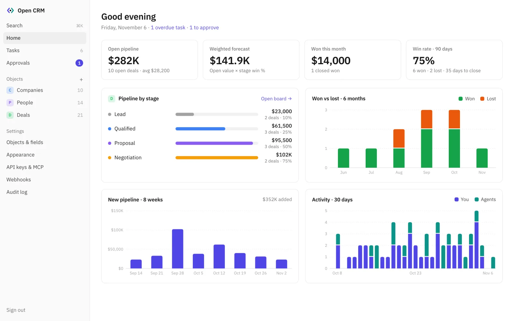
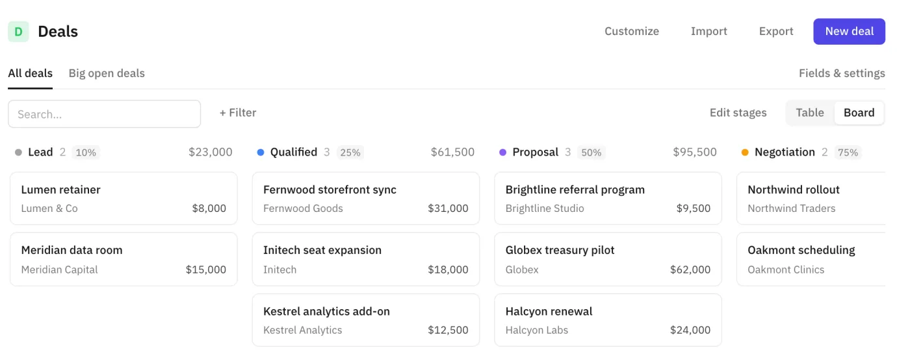
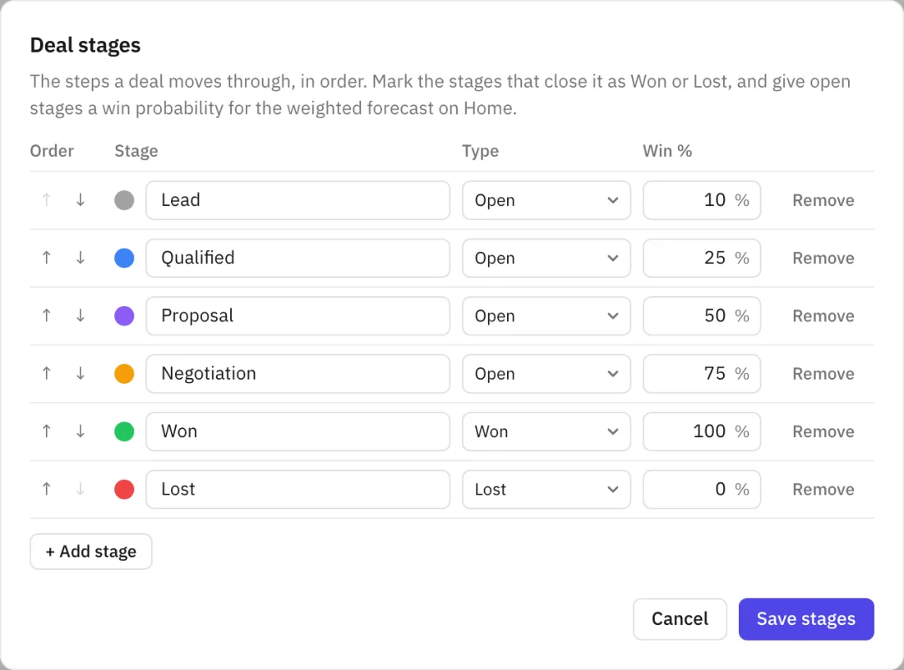
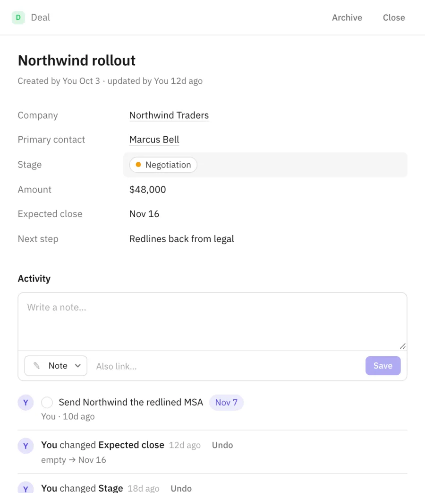
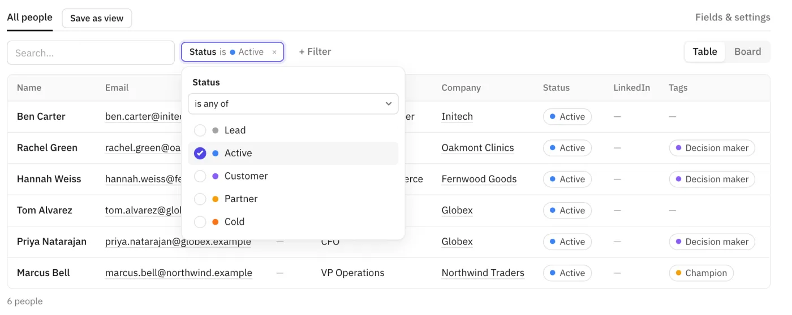
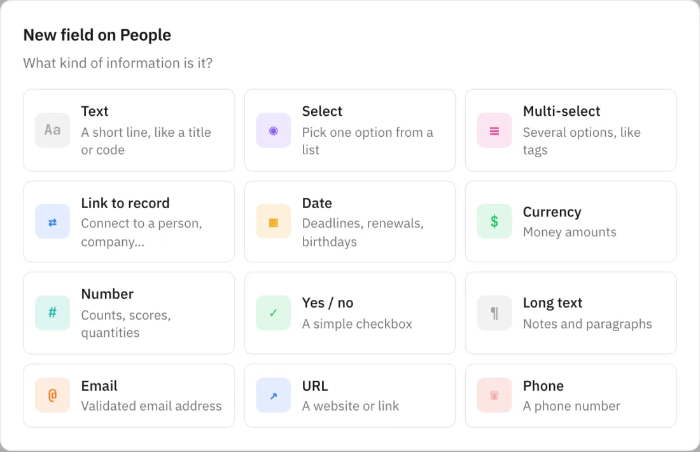
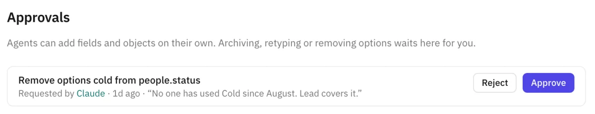
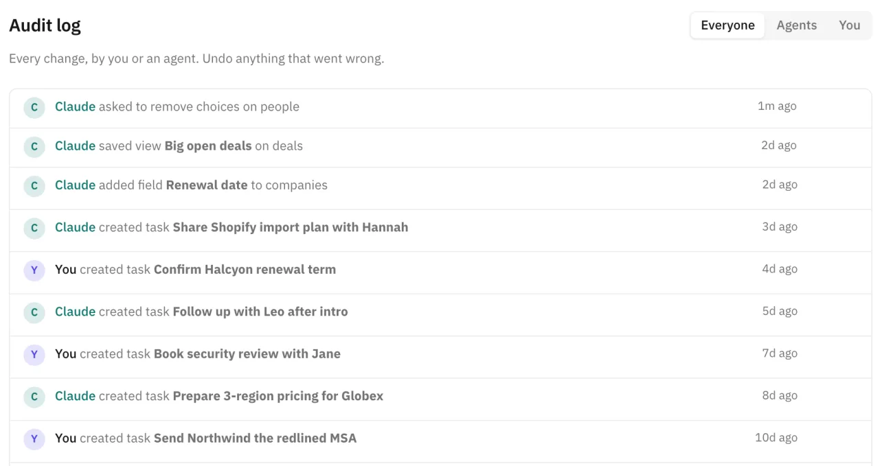

A pipeline you can see
Drag deals between stages on the board, or switch to a table. Each column shows its count, total value and win probability.
Group any object by any select field: the same board works for hiring, projects or fundraising.
Most CRMs are cumbersome: per-seat pricing, a menu for everything, and a data model you have to bend your work around. Open CRM is a small, self-hosted CRM you can run as it is, or fork and build into exactly the CRM you want.

Every screenshot here is the real app, running on demo data.
Drag deals between stages on the board, or switch to a table. Each column shows its count, total value and win probability.
Group any object by any select field: the same board works for hiring, projects or fundraising.

Rename, reorder and recolor stages. Mark which stages close a deal as won or lost, and give open stages a win percentage.

Notes, calls, emails, meetings and tasks sit on one timeline, next to every field change and who made it.
A note or task can link to as many records as it's about: the deal, the person and the company at once.

Filter on any field, including relative dates like "updated in the last 14 days", then save the result as a view.
Agents use the same filters, so "show me big deals that went quiet" turns into a view you can open later.

Add fields and whole new objects (investors, properties, candidates) from the UI. Every table, form, filter and board picks them up.

Every change is in the audit log under your name or the agent's key. Undo record changes, notes, tasks, new or edited fields and objects, and archived fields and objects from there.
Archiving a field or object, removing options and changing a field's type can lose data, so agents have to ask. The request waits in your Approvals inbox until you decide.


The MCP server isn't bolted on. Agents read the schema, so they know your objects, fields and stages, and they get tools for the same work you do in the UI. Give each agent its own key with only the scopes it needs.
describe_schemasearchlist_recordsget_recordget_overviewlist_taskslist_viewscreate_recordupdate_recordupsert_recordbulk_upsert_recordsarchive_recordlog_activitycreate_taskupdate_taskcomplete_tasksave_viewupdate_viewdelete_viewcreate_object_typeupdate_object_typeadd_fieldupdate_fieldrequest_schema_changeYouJust got off a call with Marcus at Northwind. They want EU and US on one contract, and legal is reviewing the DPA. Move the deal forward and remind me Friday.
An example of the tool calls. Each one shows up in the audit log under the agent's key.
Due dates, overdue counts on Home, and tasks that link to any records.
Map columns to fields, and match on email or domain to update instead of duplicating.
Records, schema, views and import/export over JSON at /api, with the same keys as MCP. Reference
Get record, activity and approval events, signed with HMAC and retried on failure.
Press ⌘K to jump to any record by name, email or any text field.
Follows your system theme. Pick an accent color and a color for each object.
Plain tables you can query, back up with pg_dump and take with you.
The web app, API and MCP server ship as one Node process in one Docker image.
No license keys, no telemetry, no seats. Fork it and make it yours.
Run it as it is and shape it from the UI, or fork it and change anything. All business logic lives in one folder (server/src/core), the API and MCP server are thin layers on top of it, and the UI renders from the schema, so most changes are small and local.
Open CRM is one Docker container plus Postgres. Migrations run on boot, and the first boot creates People, Companies and Deals.
git clone https://github.com/housewithbricks/open-crm
cd open-crm
cp .env.example .env # set ADMIN_PASSWORD
docker compose up -dOr anywhere Docker runs: Fly.io, Coolify, Dokploy, Portainer, a VPS. See the self-hosting guide.
Open CRM speaks MCP, so any MCP client can use it. Create a key in Settings → API keys & MCP, then pick your client:
Run once in your terminal:
claude mcp add --transport http open-crm https://your-host/mcp \
--header "Authorization: Bearer ocrm_…"In Claude on the web or desktop: Settings → Connectors → Add custom connector. Connectors take a URL rather than headers, so the key goes in the URL:
https://your-host/mcp?key=ocrm_…Treat this URL like a password, and give each connector its own key.
In ChatGPT, turn on developer mode (Settings → Apps & Connectors → Advanced settings), then create a connector with this URL and No authentication. The key in the URL is the authentication.
https://your-host/mcp?key=ocrm_…On the OpenAI API, add an mcp tool with server_url and an Authorization header instead.
Add to ~/.cursor/mcp.json:
{
"mcpServers": {
"open-crm": {
"url": "https://your-host/mcp",
"headers": { "Authorization": "Bearer ocrm_…" }
}
}
}Add to .vscode/mcp.json for GitHub Copilot agent mode:
{
"servers": {
"open-crm": {
"type": "http",
"url": "https://your-host/mcp",
"headers": { "Authorization": "Bearer ocrm_…" }
}
}
}Point any MCP client at the Streamable HTTP endpoint with the key as a bearer token:
URL https://your-host/mcp
Header Authorization: Bearer ocrm_…If the client only takes a URL, use /mcp?key=ocrm_…. If it only runs local servers, bridge with mcp-remote:
npx -y mcp-remote https://your-host/mcp --header "Authorization:Bearer ocrm_…"Setup for Windsurf, Gemini CLI, Codex, Claude Desktop config files and the OpenAI API is in the guide to connecting agents.
Yes. It's MIT licensed, with no paid tier, license keys or telemetry. You pay only for wherever you host it.
Yes, but as it is there's one user login, so everyone shares it. Agents each get their own API key, so their changes are attributed separately. If you need separate users and roles, fork it and add them.
In your own Postgres database, in plain tables. Nothing is sent anywhere else unless you add a webhook. Back it up with pg_dump or export any object as CSV.
Whatever its key's scopes allow: read, write records and notes, or add objects and fields. Archiving a field or object, removing options and changing a field's type always wait for your approval, and you can revoke a key at any time.
Export a CSV from it, add any fields you need, and import. Match on email or domain to update existing records instead of creating duplicates. Or ask your agent to do it.
Pull the new image or code and restart. Database migrations run on boot.